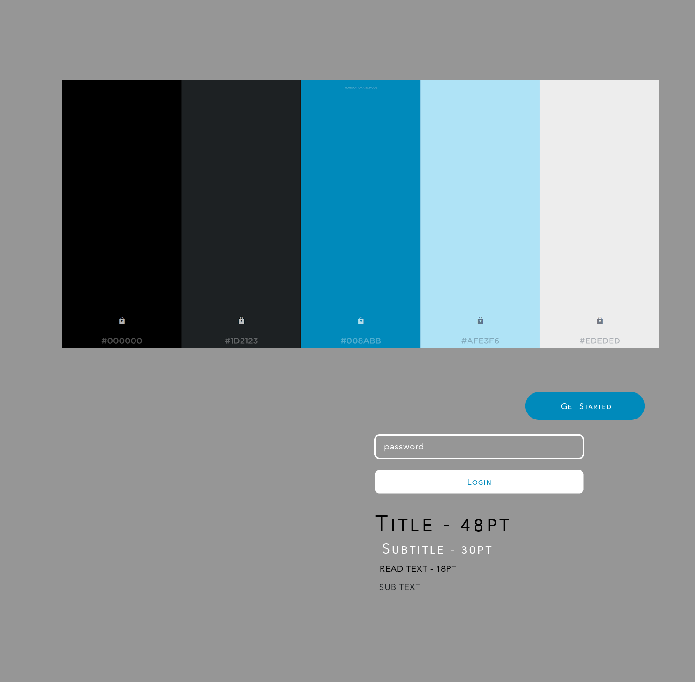
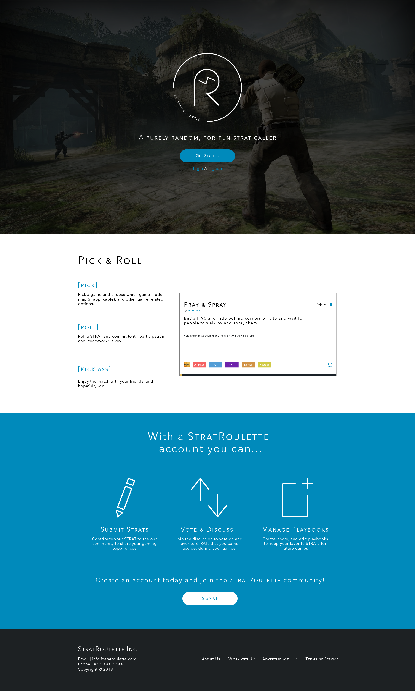
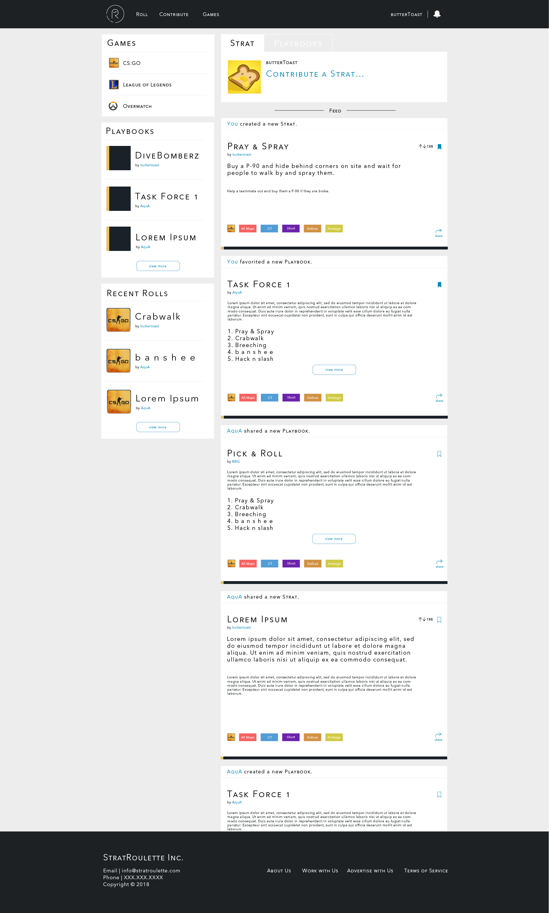
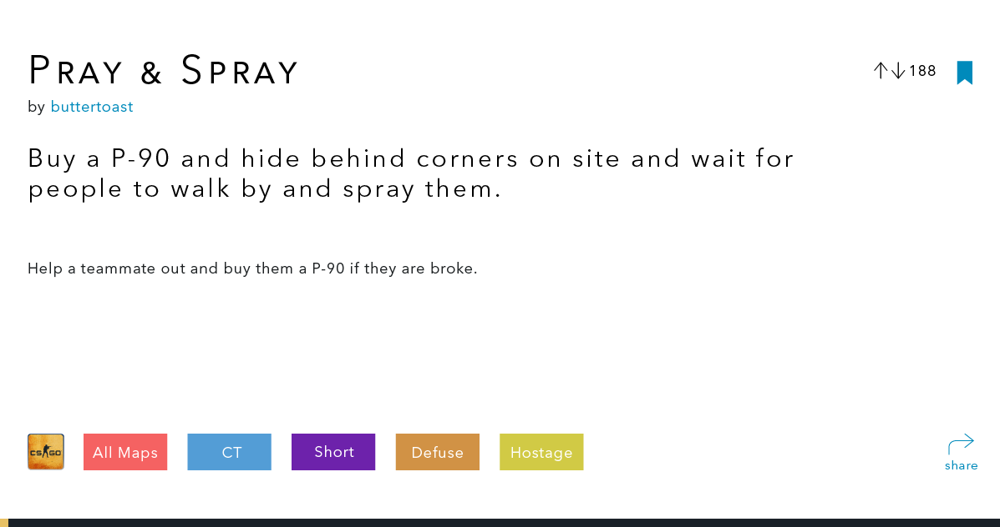

StratRoulette
Role: Primary Designer
Duration: August 2017 - Present
Overview
StratRoulette [SR] is a project created by my good friend Justin Chen from CMU. SR essentially rolls the dice for you and randomly decides, based on community sourced plays or strats, how you should play each round of CounterStrike. I primarily work on and in a way pioneer StratRoulette’s identity and feature development, but I also take part in the front end development in React. StratRoulette took off a few years back, and my friend asked me to do a redesign to not only develop some sort of identity but also create and design user flows that would help foster community engagement.
Process
The first order of business for StratRoulette was for me to create a logo. The biggest motivation for me was to not make it look to “gamer,” and also not too boring. What I shortly realized was that making some sort of logo or monogram with the letters “S” and “R” were quit tricky.
The first iterations were based on a hexagonal shape, similar to a revolver barrel. I wanted to really emphasize the roulette part, and I thought it would be interesting with the idea “russian roulette.” However, it was hard for me to execute and figure out where the S would ultimately be.
Then, I tried more of a symmetric approach, as I tried to make the S and the R shapes look more similar, but it just seemed to take too much space
Next was some sort of lightning bolt to convey the fast paced nature of SR, and the R was placed as more of an exponent and not the main focus.
However, the last iteration was something completely unorthodox. I was really inspired by something like Parley’s icons with some sort of circle border, and I just toyed around with switching the emphasis of the letters. Ultimately, I came to this by just trying it out, but I seemed to like it more: the letter “R” seemed to fit better with a Circle, as it wasn’t clashing with either sharp edges or curved edges of the bends. This logo is used for the main page, as well as the favicon. Note that the favicon does not have the “StratRoulette” text in the circle, as it is too small to be read or seen.
Layouts
After doing the logos, I really wanted to make sure the whole website was made so that it could be catered towards different types of games, as we were thinking of expanding from CS:GO. I ultimately was just tired of seeing really bright or neon and crazy looking text on websites to fit the brand of the game, and since SR is not really tied to a game, I figured I could just start from scratch and keep it minimal. I first just started out by picking some colors, really just anything I felt, and at that time I felt like electric blue and a dark black/grey would be pretty fitting as accent colors. All the icons made in SR were also created by me with a little bit of illustrator magic.
Then came mainfunctionality of the application, which consisted of the landing, profile, settings, home, login, and a few more. I first started out creating the landing page, which showcases what the product does: rolling strats, but I also wanted to showcase and get people to sign up. So I followed the typical three column/icon approach to showcase StratRoulettes features. However, the most important part was to showcase the Strat card because it was the one thing that users directly interacted with. We wanted to show what new things we added: color coding towards games, a save and share button, tags, etc, and furthermore this would be a component that shows up everywhere.
While keeping in mind that React could reuse components, I wanted to make sure my design could be used anywhere in the website. Thus moving on to the home page, it is quite similar to something you see Facebook or Soundcloud. We wanted to show the activity feeds of people that a user follow and show what Strats are being favorited or created. Essentially this page is where people share strat cards, playbooks (collections of strats), and more. I was ultimately inspired by how SoundCloud takes the “social media” approach of sharing music, where people post songs or repost songs, instead of acting like a typical music library. The same goes for SR, we wanted it to act not only as a repository of strats that people contribute, but we want to be able to showcase them and share them easily.
We wanted to provide a way for people to contribute strats, search/filter for strats, roll strats (when they play the game), and comment on strats. We are still in the process of building out the product, so designing has stopped for now, and we are focusing on the landing and home pages. Stay tuned for more updates.